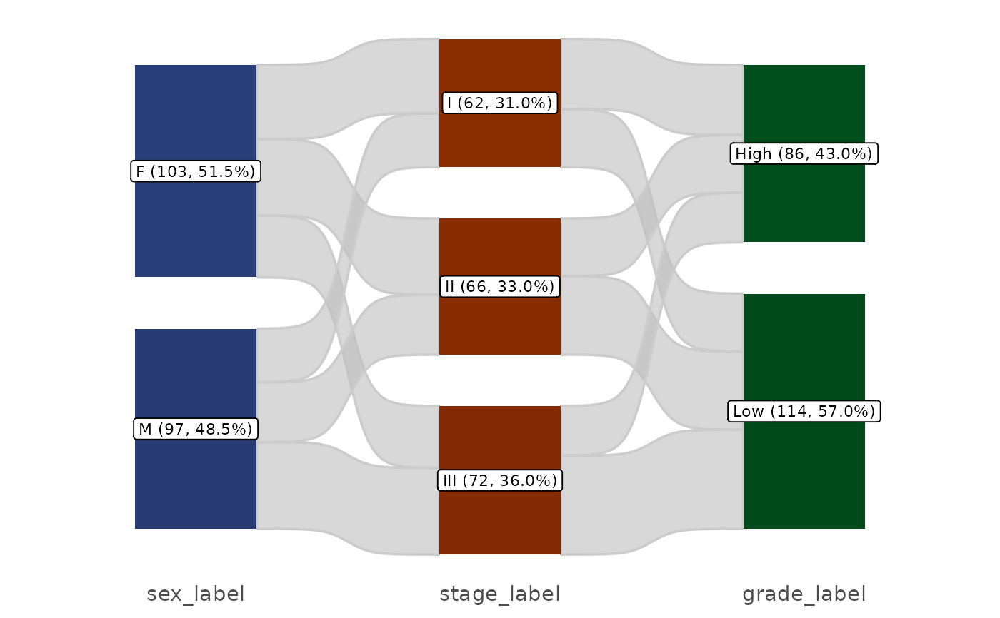
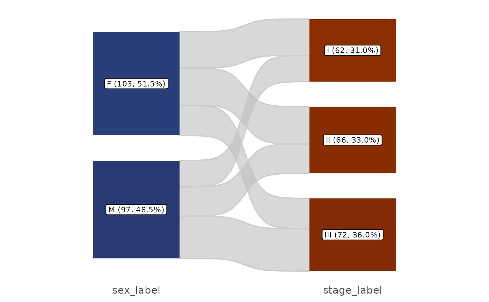
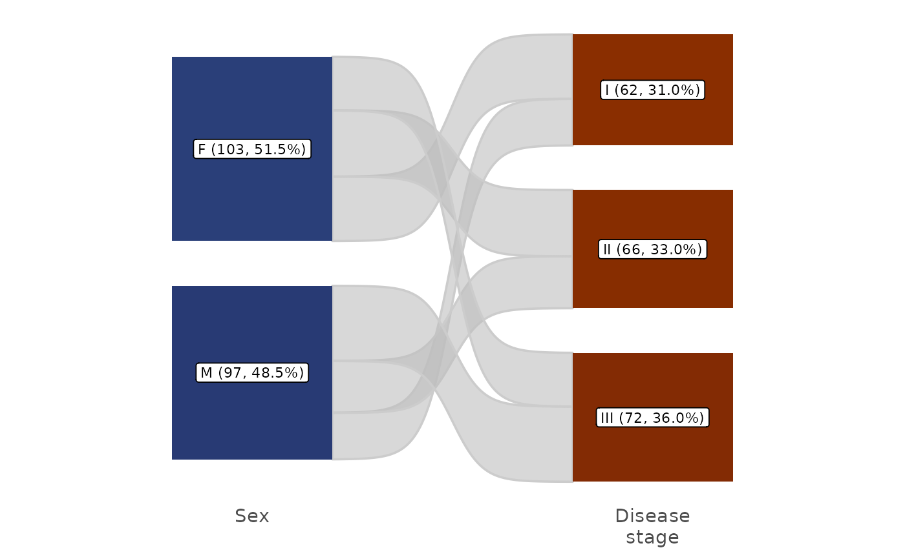
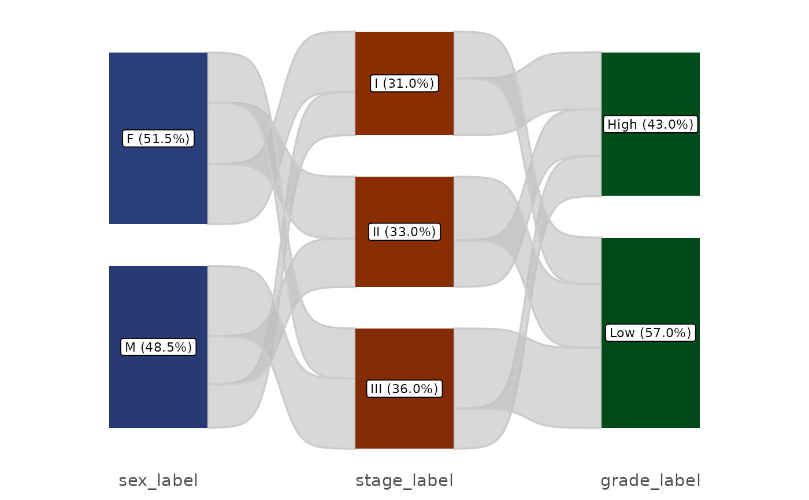
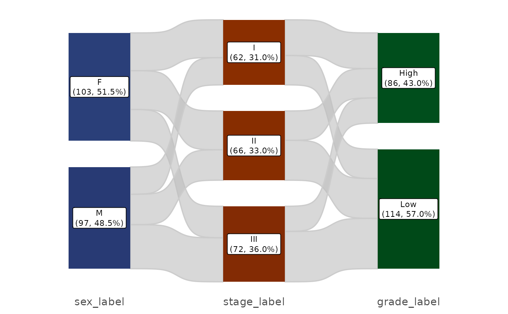
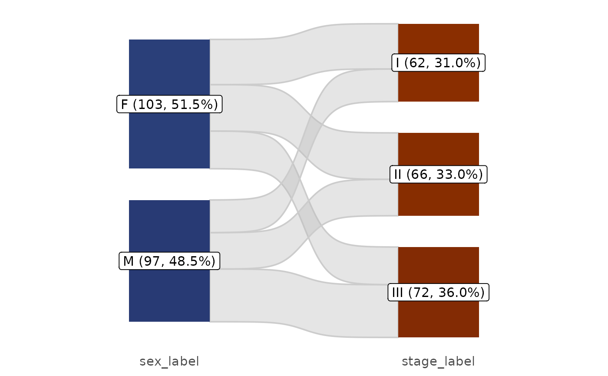

Visualise the flow/proportion changes across multiple categorical variables using a Sankey (alluvial) diagram. Each node label shows the level name, count, and percentage.
Usage
plt_sankey(
data,
vars,
palette = NULL,
reverse_levels = TRUE,
show_text = c("all", "n", "pct", "name", "all_wrap", "none"),
flow_args = list(alpha = 0.6, fill = "grey", color = "grey80", smooth = 8),
node_args = list(width = 0.4, space = NULL, color = NA, linewidth = NULL),
label_args = list(size = 3, lineheight = 1.2, hjust = 0.5, color = "black", box = TRUE,
fill = "white", alpha = 1, min_pct = 0, pct_accuracy = 0.1),
base_size = 14,
theme_use = NULL,
save = list()
)Arguments
- data
A data frame.
- vars
Character vector selecting at least two categorical variables, displayed left-to-right in the given order. An unnamed vector contains column names and retains the existing axis labels. A named vector maps column names to display labels, e.g.
c(sex = "Sex", stage = "Stage"). All names must be non-empty, unique column names; partially named vectors are not supported. Labels must be non-missing strings. Empty strings hide individual labels, and line breaks are preserved.- palette
Colour palette name from
pal_get(), or a character vector of colours. DefaultNULLauto-generates colours per variable using sequential HCL palettes.- reverse_levels
Logical, reverse factor levels for display. Default
TRUE.- show_text
Single character string. Controls node label content:
"all"(default) — name + count + percentage, e.g."A (10, 30.3%)"."all_wrap"— name on the first line, with count and percentage together on the second line, e.g."A"above"(10, 30.3%)"."n"— name + count, e.g."A (10)"."pct"— name + percentage, e.g."A (30.3%)"."name"— name only, e.g."A"."none"— hide labels without removing nodes or flows.
- flow_args
Named list controlling flow ribbons:
alphaNumeric opacity in [0, 1]. Default 0.6.
fillSingle fill colour or
NA. Default"grey".colorSingle border colour or
NA. Default"grey80".smoothPositive finite numeric value controlling the sigmoid curve steepness in ggsankey. Default 8.
- node_args
Named list controlling nodes and flow endpoints:
widthNumeric width in (0, 1], relative to adjacent x-axis positions. Default 0.4.
spaceNULLfor automatic spacing, or a non-negative gap in count units. DefaultNULL; 0 removes gaps. Labels use the resulting node centers.colorSingle border colour or
NAfor no border. DefaultNA. Node fills are controlled bypalette.linewidthNULLto retain the backend default, or a non-negative border width in mm. DefaultNULL.
- label_args
Named list controlling node labels:
sizePositive text size in mm. Default 3.
lineheightPositive finite line spacing multiplier relative to text size. Default 1.2; smaller values make multiline labels more compact. Applies to boxed and plain labels, including
all_wrapand category names containing line breaks. Does not set box padding.hjustFinite numeric horizontal justification: 0 is left, 0.5 is centered, and 1 is right. Default 0.5.
colorSingle text colour or
NA. Default"black".boxLogical; use boxed labels when
TRUE, plain text whenFALSE. DefaultTRUE.fillSingle background colour or
NA, used only whenbox = TRUE. Default"white".alphaNumeric opacity in [0, 1]. Default 1.
min_pctNumeric proportion in [0, 1]. Show labels only when the category count divided by the number of input rows meets this threshold. Default 0; nodes and flows are never filtered.
pct_accuracyPositive rounding accuracy in percentage points, used by styles containing percentages. Default 0.1.
- base_size
Positive base font size in points for the default theme. Default 14; ignored when
theme_useis supplied.- theme_use
NULLforggsankey::theme_sankey(base_size), or a theme specification accepted by the internal.resolve_theme()resolver (theme object, function, or function name). DefaultNULL.- save
NULL, an empty list, or a named list forwarded toRegR::save_plt(). Allowed fields arefilename(required),widthandheight(in inches). Writes PDF only; the saver appends the extension and defaults to width 10 and height 11.
Details
Each configuration list supports partial overrides; unknown,
duplicate, and empty field names are rejected. The former top-level
alpha is now flow_args$alpha; width and space
are now in node_args; label_size and label_hjust
are now label_args$size and label_args$hjust.
See also
Other plot:
PlotButterfly(),
PlotButterfly2(),
PlotRankCor(),
plt_cat(),
plt_con(),
plt_dist(),
plt_upset()
Examples
df <- data.frame(
sex = factor(sample(c("M","F"), 200, TRUE)),
stage = factor(sample(c("I","II","III"), 200, TRUE)),
grade = factor(sample(c("Low","High"), 200, TRUE))
)
# Basic sankey
plt_sankey(df, vars = c("sex", "stage", "grade"))
#> Warning: attributes are not identical across measure variables; they will be dropped
#> Warning: The `size` argument of `element_rect()` is deprecated as of ggplot2 3.4.0.
#> ℹ Please use the `linewidth` argument instead.
#> ℹ The deprecated feature was likely used in the ggsankey package.
#> Please report the issue at <https://github.com/davidsjoberg/ggsankey/issues>.

# Two variables
plt_sankey(df, vars = c("sex", "stage"))
#> Warning: attributes are not identical across measure variables; they will be dropped

# Map column names to axis labels
plt_sankey(df, vars = c(sex = "Sex", stage = "Disease\nstage"))
#> Warning: attributes are not identical across measure variables; they will be dropped

# Custom palette
plt_sankey(df, vars = c("sex", "stage"), palette = "Paired")
#> Warning: attributes are not identical across measure variables; they will be dropped
 # Without counts in labels
plt_sankey(df, vars = c("sex", "stage", "grade"), show_text = "pct")
#> Warning: attributes are not identical across measure variables; they will be dropped
# Without counts in labels
plt_sankey(df, vars = c("sex", "stage", "grade"), show_text = "pct")
#> Warning: attributes are not identical across measure variables; they will be dropped

# Count and percentage on the second line, with compact line spacing
plt_sankey(df, vars = c("sex", "stage", "grade"), show_text = "all_wrap",
label_args = list(lineheight = 1))
#> Warning: attributes are not identical across measure variables; they will be dropped

# Adjust appearance
plt_sankey(df, vars = c("sex", "stage"),
flow_args = list(alpha = 0.4), node_args = list(width = 0.3),
label_args = list(size = 4, box = FALSE, min_pct = 0.05))
#> Warning: attributes are not identical across measure variables; they will be dropped
